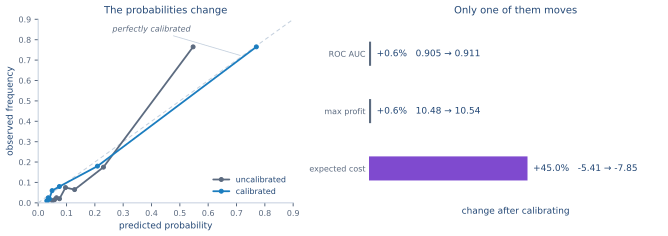
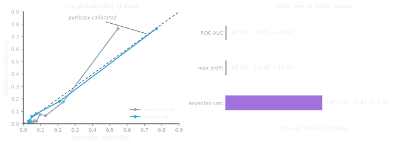

4.1. Scores, probabilities and calibration#
Every metric in Empulse takes a y_score array, and every model produces one. But the strategies
do not all mean the same thing by it, and getting this wrong is the quietest failure mode in the
package: nothing raises, the number just comes out different from the one you meant.
4.1.1. Two kinds of score#
Cost, LogCost and
Savings interpret y_score as a probability. They multiply each
outcome’s cost by the model’s stated probability of that outcome, so a score of 0.8 is a claim that
this instance is positive 80% of the time, and the resulting number is only as good as that claim.
The MaxProfit family interprets y_score as a ranking. It sweeps
every possible cut-off and reports the profit at the best one, which depends on the order of the
scores and not on their values. Any strictly increasing transformation of the scores leaves the
result unchanged.
That difference has a practical consequence: a model whose ranking is excellent but whose
probabilities are systematically off will score correctly under
MaxProfit and incorrectly under Cost.
4.1.2. How much does it matter?#
Enough to change a business case. Here is a random forest — a family well known for over-confident probabilities — scored before and after calibration:
from sklearn.calibration import CalibratedClassifierCV
from sklearn.datasets import make_classification
from sklearn.ensemble import RandomForestClassifier
from sklearn.metrics import roc_auc_score
from sklearn.model_selection import train_test_split
from empulse.metrics import Cost, CostMatrix, MaxProfit, Metric
X, y = make_classification(n_samples=4000, n_informative=6, weights=[0.85], random_state=0)
X_train, X_test, y_train, y_test = train_test_split(X, y, test_size=0.4, random_state=0)
def forest():
return RandomForestClassifier(n_estimators=50, max_depth=4, random_state=0)
uncalibrated = forest().fit(X_train, y_train)
calibrated = CalibratedClassifierCV(forest(), method='sigmoid', cv=3).fit(X_train, y_train)
score_uncalibrated = uncalibrated.predict_proba(X_test)[:, 1]
score_calibrated = calibrated.predict_proba(X_test)[:, 1]
matrix = CostMatrix().add_tp_benefit(100).add_fp_cost(10)
expected_cost = Metric(matrix, Cost())
max_profit = Metric(matrix, MaxProfit())
for name, score in [('uncalibrated', score_uncalibrated), ('calibrated', score_calibrated)]:
print(
f'{name:13s} auc={roc_auc_score(y_test, score):.4f}'
f' cost={expected_cost(y_test, score):7.3f}'
f' max profit={max_profit(y_test, score):6.3f}'
)

Calibration is monotone, so the ranking survives it untouched. The cost does not — and since both cost figures here are negative, that 45% is 45% more profit.#

Calibration is monotone, so the ranking survives it untouched. The cost does not — and since both cost figures here are negative, that 45% is 45% more profit.#
The ROC AUC barely moves — 0.905 to 0.911 — because calibration is monotone and cannot reorder anything. Neither does the maximum profit, 10.48 to 10.54, for the same reason.
The expected cost moves from -5.41 to -7.85. Both are profits, but the second is 45% larger
than the first. Nothing warned you; the uncalibrated model simply understated what the campaign was
worth, because its hedged probabilities spread each instance’s benefit across both outcomes.
Which direction the error goes depends on the model. Over-confident probabilities (boosted trees, naive Bayes) overstate the value of a campaign; under-confident ones understate it. Neither is safe to report.
4.1.3. When to calibrate#
Situation |
What to do |
|---|---|
Calibrate, unless the model is already a well-specified probabilistic one. |
|
Comparing models on |
No need; the measure only reads the ranking. |
Choosing a threshold from a cost matrix |
Calibrate. A break-even threshold is a statement about probabilities. |
Training with a cost-sensitive |
Not required. The model is optimising the objective directly rather than being scored on its probabilities afterwards. |
Logistic regression and the cost-sensitive linear models are usually close to calibrated already. Random forests, gradient boosting, SVMs and naive Bayes generally are not.
4.1.4. Calibrating a model#
scikit-learn’s CalibratedClassifierCV wraps any classifier and fits a
correction on held-out folds:
platt = CalibratedClassifierCV(forest(), method='sigmoid', cv=3).fit(X_train, y_train)
isotonic = CalibratedClassifierCV(forest(), method='isotonic', cv=3).fit(X_train, y_train)
print(round(expected_cost(y_test, platt.predict_proba(X_test)[:, 1]), 3))
print(round(expected_cost(y_test, isotonic.predict_proba(X_test)[:, 1]), 3))
'sigmoid' (Platt scaling) fits a two-parameter logistic curve. It is the safer default: it can
only apply a smooth monotone correction, so it rarely overfits, but it also cannot fix a
mis-shapen curve. 'isotonic' fits an arbitrary monotone step function, which is more flexible
and correspondingly hungrier for data — with a few hundred samples it will overfit the calibration
folds.
4.1.5. Calibration inside CSThresholdClassifier#
CSThresholdClassifier and CSRateClassifier
compute a break-even threshold analytically from the cost matrix, which is exactly the situation
that needs calibrated probabilities. They therefore calibrate by default: unless told otherwise,
the wrapped estimator is fitted inside a
CalibratedClassifierCV before the threshold is derived.
from sklearn.linear_model import LogisticRegression
from empulse.models import CSThresholdClassifier
for calibrator in ['sigmoid', 'isotonic', None]:
model = CSThresholdClassifier(
LogisticRegression(max_iter=500), calibrator=calibrator
).fit(X, y, fp_cost=1, fn_cost=10)
print(f'{str(calibrator):9s} positives={model.predict(X).mean():.3f}')
calibrator accepts 'sigmoid' (the default), 'isotonic', None to skip calibration, or
any estimator of your own.
Note
The value of threshold_ itself does not depend on the calibrator — it is derived from the
cost matrix alone. What calibration changes is which instances fall above it.
Set calibrator=None when the estimator is already calibrated, when you have calibrated it
yourself upstream, or when the dataset is too small to spare folds for a calibration fit. A
constructor estimator you pass is never modified in place; a clone is configured and fitted.
4.1.6. Where next#
Threshold Tuning — using the calibrated scores to pick an operating point.
Choosing a strategy — which strategies read probabilities and which read rankings.